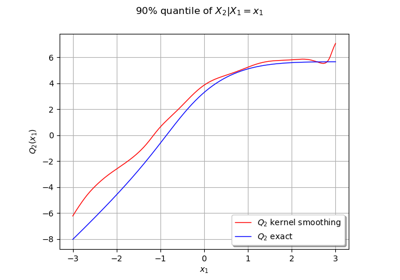
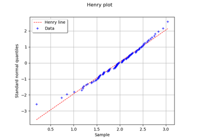

Data analysis¶
Manage data and samples¶


A quick start guide to the Point and Sample classes
A quick start guide to the Point and Sample classes


Sample analysis¶


Compute SRC indices confidence intervals
Compute SRC indices confidence intervals

Distribution fitting¶


Get the asymptotic distribution of the estimators
Get the asymptotic distribution of the estimators



Estimate a conditional quantile
Estimate a conditional quantile


Statistical tests¶

Draw the QQ-Plot



Test Normality


Kolmogorov-Smirnov : understand the p-value
Kolmogorov-Smirnov : understand the p-value

Kolmogorov-Smirnov : get the statistics distribution
Kolmogorov-Smirnov : get the statistics distribution
Estimate dependency and copulas¶


Estimate stochastic processes¶


Graphics¶


Visualize sensitivity